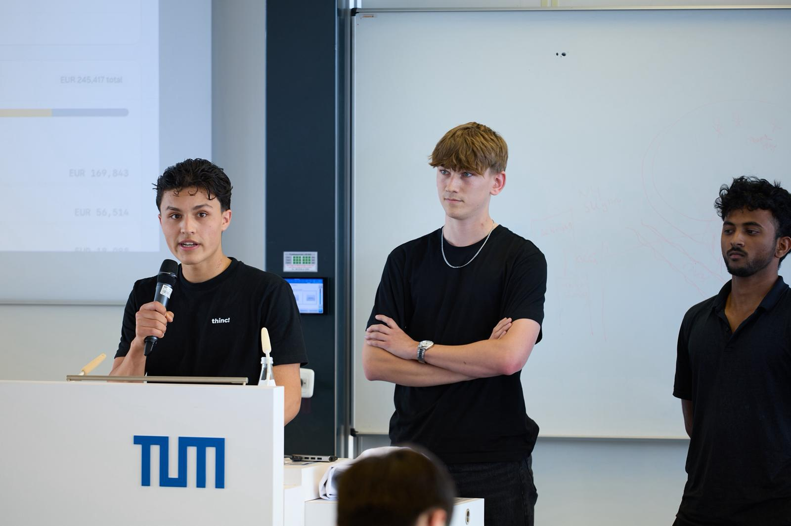

⚡Winner
StealthDetection
TUM.ai × Invertix.ai Energy Hack
Custom-trained ML model for energy theft detection with real-time anomaly scoring across smart meter connectors and an operator dashboard.
TUM Information Systems · AI Builder · Founder
Ich baue AI-Produkte, Agenten und schnelle Prototypen an der Schnittstelle von Wirtschaftsinformatik, Produktstrategie und Software Delivery. Aktuell studiere ich an der TUM, fuehre TMA IT Solutions mit und arbeite an Projekten rund um Agentic AI, Dashboards und Automatisierung.

Ausgewaehlte Projekte aus AI-, Energy-, Sales- und Product-Hackathons. Fokus: schnell validieren, technisch liefern, klar praesentieren.
TUM.ai × Invertix.ai Energy Hack
Custom-trained ML model for energy theft detection with real-time anomaly scoring across smart meter connectors and an operator dashboard.
TUM.ai E-Lab × Project A VC
Social graph intelligence for venture teams: founder-network mapping, signal convergence, and early traction discovery.
lablab.ai Multi-Agent Solar Sales
Multi-agent solar sales assistant for lead qualification, customer context, and automated follow-up workflows.
AI Product Prototype
Conversational product prototype exploring personalized AI support, memory, and emotionally aware user interaction.
AI Sales Workflow
Agentic reply assistant for sales workflows with structured context, response drafting, and practical automation patterns.
Career & Talent Advisor
Advisor prototype for talent discovery and career guidance, combining structured profiles with AI-assisted recommendations.